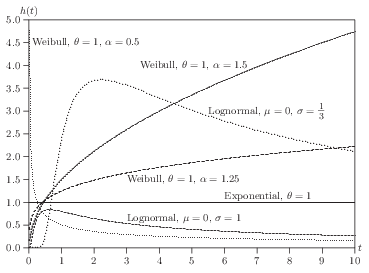
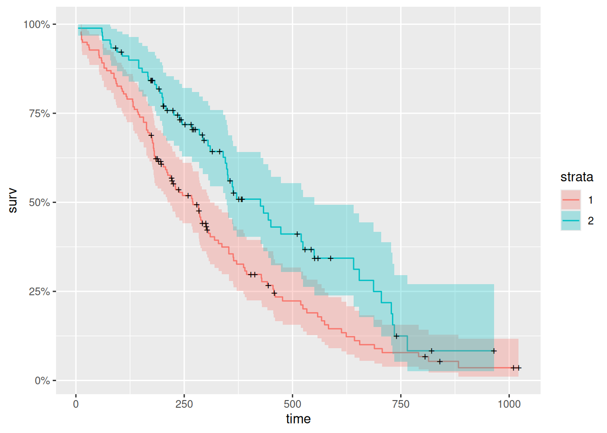

Survival analysis is also called time to event analysis or event history analysis. We use survival models to analyze data that have the following characteristics:
the dependent variable is the waiting time till the occurrence of some event;
some observations are censored; that is, some units are not in the data set anymore for some reason before an event happens. For some units we observe the event and the exact waiting time; for others it has not occurred, and all we know is that the waiting time exceeds the observation time. However, we believe if they stayed in the study, sooner or later an event would happen.
we are trying to explain (predict) the occurrence of an event with some predictors (explanatory variables).
Let \(T\) denote the time variable, a nonnegative, continuous random variable with PDF \(f(t)\) and CDF \(F(t)\), where \(t\) is a realization of \(T\). The survival function is defined by
\[
S(t) = Pr(T>t) = 1-F(t)
\]
The graph of \(S(t)\) against \(t\) is known as the survival curve. If there is no censoring, then the survival function is easy to estimate by the ratio of number of units survives at \(t\) vs. total number of units at risk at \(t\). The most common method to estimate the survival function with a survival data set containing censored observations is the Kaplan-Meier method. The basic idea is to use the product of a series of conditional probabilities.
First sort the event times from the smallest to the largest:
where \(r_j\) is the number of units at risk at \(t_{(j)}\) and \(d_j\) is the number of “failure” or events at \(t_{(t)}\). Note that units censored at \(t_{(j)}\) are included in \(r_j\).
The variance of this estimator can be estimated by:
We are often interested in which periods have the highest or lowest change of “death” or “failure” or other events. That is, we may be interested in the probability that a state ends between \(t\) and \(t+
\Delta t\) conditional on having reached \(t\) in the first place.
The probability is \[
\mbox{Pr} (t<T \leq t+\Delta t | T \geq t)=\frac{F(t+\Delta
t)-F(t)}{S(t)}
\]
The hazard function is defined by \[
h(t)=\lim_{\Delta t \rightarrow 0}\mbox{Pr} (t<T \leq t+\Delta t |
T \geq t)=\frac{f(t)}{S(t)}=\frac{f(t)}{1-F(t)}
\]
One of the simplest functional forms is the exponential distribution \[
f(t,\theta)=\theta e^{-\theta t}
\]
Therefore, the hazard function is \[
h(t)=\theta
\]
A much more flexible functional form is Weibull \[
f(t,\theta, \alpha)=1-\exp(-(\theta t)^{\alpha}).
\]
Hazard function can be shown to be \[
h(t)=\alpha \theta^{\alpha} t^{\alpha-1}
\]
However, Weibull distribution does not allow for the possibility that the hazard may first increase then decrease over time. Log-normal distribution does allow this.

Various hazard functions from Davidson and MacKinnon
11.3 Log-likelihood function
Suppose we have \(n\) units with a survival function \(S(t)\), density \(f(t)\), and hazard \(h(t)\). If for unit \(i\), the event happens at \(t_i\), it’s contribution to the likelihood function is the density at that point:
\[
L_i=f(t_i)=S(t_i)h(t_i)
\]
If no event at \(t_i\), all we know is that the lifetime exceeds \(t_i\). The probability is \[
L_i=S(t_i),
\] which is the contribution to the likelihood function from a censored observation.
Therefore, if \(U\) denotes the set of uncensored observations, the log-likelihood function for the entire sample can be written as \[
\ell (t, \theta)=\sum_{i \in U} \log h(t_i | {\bf X}_i,
\theta)+\sum_{i=1}^n \log S(t_i | {\bf X}_i, \theta)
\]
11.4 Proportional Hazard Models
11.4.1 Model and likelihood
One class of models that is quite widely used is the proportional hazard models (based on Cox (1972)). $$ h(t | {}_i)=h_0(t)({}’_i ),
$$
In this model \(h_0(t)\) is called baseline hazard rate; it describes the risk for units with \(\bf x_i = 0\). \(\exp ({\bf x}'_i \beta)\) represents the relative risk, a proportionate increase or decrease in risk, due to \(\bf x_i\). The interpretation of \(\beta\) is that \(\exp(\beta_i)\) gives the relative risk change associated with an increase of one unit in \(x_i\), all other explanatory variables remaining constant.
\(\beta\) is estimated by maximizing a partial likelihood function. It is partial likelihood function since the baseline hazard is factored out. Suppose one event happens at time \(t_j\). Conditional on this event the probability that case \(i\) dies (meaning this event happened to case \(i\), not other cases in the risk set) is
We can see here that Cox’s model is for continuous time survival data. It is assumed there is no ties at time \(t_j\) (in continuous time is not possible for two events to happen at the same time). In reality, we observe ties of event time, because in many situations, we observe grouped data. For example, we observe case \(m\) and \(n\) have events at the same time \(j\). In that case, in the denominator, whether we include case \(m\) in the calculation of the likelihood of case \(n\) is ambiguous. In that case, special treatment is needed. A standard approximation (Breslow and Peto) is to let
where \(D(t_j)\) is the set of cases that die at time \(t_j\) and \(d_j\) denotes the number of cases that die at time \(t_j\). This approximation works well with small number of ties relative to total number of cases at risk.
One important feature (disadvantage?) for the proportional hazard model is that for all units, the effect is the same at all time \(t\). To see this:
\[
\frac{h_1(t)}{h_2(t)} = \frac{h_0(t)\exp ({\bf x_1}'_i \beta)}{h_0(t)\exp ({\bf x_2}'_i \beta)}= \frac{\exp ({\bf x_1}'_i \beta)}{\exp ({\bf x_2}'_i \beta)},
\] which does not depend on \(t\).
One advantage of Cox’s model is that it is considered as a semi-parametric model since it does not have to specify the distribution of the survival time. The estimation process relies only on the order in which events occur, not the exact time they occur. Parameter estimates are derived assuming continuous survival times.
11.4.2 Interpretation
In equation the equation above, if we would like to calculate the partial effect of \(x_j\) on \(h\), we have:
Warning: `aes_string()` was deprecated in ggplot2 3.0.0.
ℹ Please use tidy evaluation idioms with `aes()`.
ℹ See also `vignette("ggplot2-in-packages")` for more information.
ℹ The deprecated feature was likely used in the ggfortify package.
Please report the issue at <https://github.com/sinhrks/ggfortify/issues>.

Censored observations are denoted by crosses. This is the so-called Kaplan-Meier curve.
Now let’s do a Cox model example.
fit2<-coxph(Surv(time, status)~sex+age, data =lung, method="breslow")summary(fit2)
Call:
coxph(formula = Surv(time, status) ~ sex + age, data = lung,
method = "breslow")
n= 228, number of events= 165
coef exp(coef) se(coef) z Pr(>|z|)
sex -0.512565 0.598957 0.167462 -3.061 0.00221 **
age 0.017013 1.017158 0.009222 1.845 0.06506 .
---
Signif. codes: 0 '***' 0.001 '**' 0.01 '*' 0.05 '.' 0.1 ' ' 1
exp(coef) exp(-coef) lower .95 upper .95
sex 0.599 1.6696 0.4314 0.8316
age 1.017 0.9831 0.9989 1.0357
Concordance= 0.603 (se = 0.025 )
Likelihood ratio test= 14.08 on 2 df, p=9e-04
Wald test = 13.44 on 2 df, p=0.001
Score (logrank) test = 13.69 on 2 df, p=0.001
Examples of parametric survival models: exponential, Weibull, or loglog:
exp<-survreg(Surv(time, status)~sex+age, data =lung, dist="exponential")summary(exp)
Call:
survreg(formula = Surv(time, status) ~ sex + age, data = lung,
dist = "exponential")
Value Std. Error z p
(Intercept) 6.35967 0.63547 10.01 <2e-16
sex 0.48093 0.16709 2.88 0.004
age -0.01562 0.00911 -1.72 0.086
Scale fixed at 1
Exponential distribution
Loglik(model)= -1156.1 Loglik(intercept only)= -1162.3
Chisq= 12.48 on 2 degrees of freedom, p= 0.002
Number of Newton-Raphson Iterations: 4
n= 228
weibull<-survreg(Surv(time, status)~sex+age, data =lung, dist="weibull")summary(weibull)
Call:
survreg(formula = Surv(time, status) ~ sex + age, data = lung,
dist = "weibull")
Value Std. Error z p
(Intercept) 6.27485 0.48137 13.04 < 2e-16
sex 0.38209 0.12748 3.00 0.0027
age -0.01226 0.00696 -1.76 0.0781
Log(scale) -0.28230 0.06188 -4.56 5.1e-06
Scale= 0.754
Weibull distribution
Loglik(model)= -1147.1 Loglik(intercept only)= -1153.9
Chisq= 13.59 on 2 degrees of freedom, p= 0.0011
Number of Newton-Raphson Iterations: 5
n= 228
loglog<-survreg(Surv(time, status)~sex+age, data =lung, dist="loglogistic")summary(loglog)
Call:
survreg(formula = Surv(time, status) ~ sex + age, data = lung,
dist = "loglogistic")
Value Std. Error z p
(Intercept) 5.92232 0.53269 11.12 < 2e-16
sex 0.47751 0.14036 3.40 0.00067
age -0.01401 0.00771 -1.82 0.06946
Log(scale) -0.56991 0.06543 -8.71 < 2e-16
Scale= 0.566
Log logistic distribution
Loglik(model)= -1152.9 Loglik(intercept only)= -1160.9
Chisq= 16.07 on 2 degrees of freedom, p= 0.00032
Number of Newton-Raphson Iterations: 4
n= 228
11.5 Discrete-time Survival Models
Cox (1972) proposed a discrete-time model by modeling the odds of dying at time \(t_j\) given survival up to that point.
\[
\frac{h(t_j | {\bf x}_i)}{1- h(t_j | {\bf x}_i)} = \frac{h_0(t_j | {\bf x}_i)}{1- h_0(t_j | {\bf x}_i)} \exp({\bf x}'_i \beta),
\] which is similar to Cox’s proportion hazard model for continuous time. If we take logs on both sides, we have
\[
{\rm logit} (h(t_j | {\bf x}_i)) = \alpha_j + {\bf x}'_i \beta,
\] This looks very similar to a logit model. In fact, we can fit a discrete-time proportional hazard model by running a logistic regression on a set of pseudo observations generated by “filling in” the observations between the start time to the event time or time at the end of the study period (censored). The outcome of this process is 0 unless there is an event, then it turns 1. It is treated as independent Bernoulli observations with probability given by hazard \(h_{ij}\) for individual \(i\) at time \(t_j\). The likelihood function for the discrete-time survival model coincide with the binomial likelihood of independent binomial process (Singer and Willett, 1993, has more details).
11.5.1 Do it in Stata
To do a discrete-time survival model in Stata, your data set needs to be set up as by unit-time. For example, observations by company month. The event (or failure) variable needs to be set to zero until the event happens. If no event until the end of the study period, then it is censored. A data set by unit-time can be analyzed by logit model, optionally with clustered standard error. To set up a structure like this, user-written programs called \(dthaz\) and \(prsnperd\) (means person-period) can be used.
To do a continuous-time survival model in Stata, your data can be either set up as discrete-time case (in which case you can use a time-varying explanatory variable) or a single-record-per-person data set. Stata has built-in command \(stset\) to set up a survival analysis structure. Then you can run \(stcox\) for Cox’s proportional hazard model.
Source Code
# Survival Models```{r}#| include: falselibrary(ggfortify)library(survival)```## Survival functionSurvival analysis is also called time to event analysis or eventhistory analysis. We use survival models to analyze data that have the following characteristics:1. the dependent variable is the waiting time till the occurrence of some event;2. some observations are censored; that is, some units are not in the data set anymore for some reason before an event happens. For some units we observe the event and the exact waiting time; for others it has not occurred, and all we know is that the waiting time exceeds the observation time. However, we believe if they stayed in the study, sooner or later an event would happen.3. we are trying to explain (predict) the occurrence of an event with some predictors (explanatory variables).Let $T$ denote the time variable, a nonnegative, continuousrandom variable with PDF $f(t)$ and CDF $F(t)$, where $t$ is arealization of $T$. The survival function is defined by$$S(t) = Pr(T>t) = 1-F(t)$$The graph of $S(t)$ against $t$ is known as the survival curve. Ifthere is no censoring, then the survival function is easy to estimateby the ratio of number of units survives at $t$ vs. total number ofunits at risk at $t$. The most common method to estimate the survivalfunction with a survival data set containing censored observations isthe Kaplan-Meier method. The basic idea is to use the product of a series of conditional probabilities.First sort the event times from the smallest to the largest:$$t_{(1)} \le t_{(2)} \le ... \le t_{(r)}$$Then the survival curve is estimated by:$$\hat S(t) = \prod_{j | t{(j)} \le t} (1-\frac{d_j}{r_j}),$$where $r_j$ is the number of units at risk at $t_{(j)}$ and $d_j$ isthe number of "failure" or events at $t_{(t)}$. Note that unitscensored at $t_{(j)}$ are included in $r_j$.The variance of this estimator can be estimated by:$$\hat {var} (S(t)) = (\hat S(t))^2 \sum_{j | t{(j)} \le t} \frac{d_j}{r_j(r_j-d_j)}.$$## Hazard functionWe are often interested in which periods have the highest or lowestchange of "death" or "failure" or other events. That is, we maybe interested in the probability that a state ends between $t$ and $t+\Delta t$ conditional on having reached $t$ in the first place.The probability is$$\mbox{Pr} (t<T\leq t+\Delta t | T \geq t)=\frac{F(t+\Deltat)-F(t)}{S(t)}$$The hazard function is defined by$$h(t)=\lim_{\Delta t \rightarrow 0}\mbox{Pr} (t<T \leq t+\Delta t |T \geq t)=\frac{f(t)}{S(t)}=\frac{f(t)}{1-F(t)}$$One of the simplest functional forms is the exponentialdistribution$$f(t,\theta)=\theta e^{-\theta t}$$Therefore, the hazard function is$$h(t)=\theta$$A much more flexible functional form is Weibull$$f(t,\theta,\alpha)=1-\exp(-(\theta t)^{\alpha}).$$Hazard function can be shown to be$$h(t)=\alpha\theta^{\alpha} t^{\alpha-1}$$However, Weibull distribution does not allow for the possibilitythat the hazard may first increase then decrease over time.Log-normal distribution does allow this.## Log-likelihood functionSuppose we have $n$ units with a survival function $S(t)$, density $f(t)$, and hazard $h(t)$.If for unit $i$, the event happens at $t_i$, it's contribution to the likelihood function is the density at that point:$$L_i=f(t_i)=S(t_i)h(t_i)$$If no event at $t_i$, all we know is that the lifetime exceeds $t_i$. The probability is$$L_i=S(t_i),$$which is the contribution to the likelihood function from a censoredobservation.Therefore, if $U$ denotes the set of uncensored observations, thelog-likelihood function for the entire sample can be written as$$\ell (t,\theta)=\sum_{i\in U}\log h(t_i |{\bf X}_i,\theta)+\sum_{i=1}^n\log S(t_i |{\bf X}_i,\theta)$$## Proportional Hazard Models### Model and likelihoodOne class of models that is quite widely used is the proportionalhazard models (based on Cox (1972)).$$h(t |{\bf x}_i)=h_0(t)\exp ({\bf x}'_i \beta),$$In this model $h_0(t)$ is called baseline hazard rate; it describesthe risk for units with $\bf x_i =0$.$\exp ({\bf x}'_i \beta)$represents the relative risk, a proportionate increase or decrease inrisk, due to $\bf x_i$. The interpretation of $\beta$ is that$\exp(\beta_i)$ gives the relative risk change associated with anincrease of one unit in $x_i$, all other explanatory variables remainingconstant.$\beta$ is estimated by maximizing a partial likelihood function. Itis partial likelihood function since the baseline hazard is factoredout. Suppose one event happens at time $t_j$. Conditional on thisevent the probability that case $i$ dies (meaning this event happenedto case $i$, not other cases in the risk set) is$$L_i=\frac{h_0(t)\exp(x_i'\beta)}{\sum_l I(T_l \ge t) h_0(t) \exp(x_l'\beta)}=\frac{\exp(x_i'\beta)}{\sum_l I(T_l \ge t) \exp(x_l'\beta)}$$We can see here that Cox's model is for continuous time survival data.It is assumed there is no ties at time $t_j$ (in continuous time isnot possible for two events to happen at the same time). In reality,we observe ties of event time, because in many situations, we observegrouped data. For example, we observe case $m$ and $n$ have events atthe same time $j$. In that case, in the denominator, whether we includecase $m$ in the calculation of the likelihood of case $n$ isambiguous. In that case, special treatment is needed. A standardapproximation (Breslow and Peto) is to let$$L_{m \in D(t_j)}\simeq \frac{\prod_{m \in D(t_j)}\exp(x_m'\beta)}{[\sum_{l \in R(t_j)}\exp(x_l'\beta)]^{d_j}}$$where $D(t_j)$ is the set of cases that die at time $t_j$ and $d_j$denotes the number of cases that die at time $t_j$. Thisapproximation works well with small number of ties relative to totalnumber of cases at risk.One important feature (disadvantage?) for the proportional hazardmodel is that for all units, the effect is the same at all time $t$.To see this:$$\frac{h_1(t)}{h_2(t)}=\frac{h_0(t)\exp ({\bf x_1}'_i \beta)}{h_0(t)\exp ({\bf x_2}'_i \beta)}=\frac{\exp ({\bf x_1}'_i \beta)}{\exp ({\bf x_2}'_i \beta)},$$which does not depend on $t$.One advantage of Cox's model is that it is considered as asemi-parametric model since it does not have to specify thedistribution of the survival time. The estimation process relies onlyon the order in which events occur, not the exact time they occur.Parameter estimates are derived assuming continuous survival times.### InterpretationIn equation the equation above, if we would like to calculate the partial effect of $x_j$ on $h$, we have:$$\partial h(t |{\bf x}_i) /\partial x_j=h_0(t)\exp ({\bf x}'_i \beta) \beta_j =\beta_j h(t |{\bf x}_i),$$If we do it the other way, plug in $x_j +1$ will generate$$h_0(t)\exp ({\bf x}'_i \beta +\beta_j) =\exp (\beta_j) h(t|{\bf x}'_i \beta)$$Therefore, one unit change in $x_j$ will have a change of $1-\exp(\beta_j)$ times the original hazard.### Example in R```{r}library(ggfortify)library(survival)fit <- survfit(Surv(time, status) ~ sex, data =lung)autoplot(fit)```Censored observations are denoted by crosses. This is the so-called Kaplan-Meier curve.Now let's do a Cox model example.```{r}fit2 <- coxph(Surv(time, status) ~ sex + age, data =lung, method="breslow")summary(fit2)```Examples of parametric survival models: exponential, Weibull, or loglog:```{r}exp <- survreg(Surv(time, status) ~ sex + age, data =lung, dist="exponential")summary(exp)weibull <- survreg(Surv(time, status) ~ sex + age, data =lung, dist="weibull")summary(weibull)loglog <- survreg(Surv(time, status) ~ sex + age, data =lung, dist="loglogistic")summary(loglog)```## Discrete-time Survival ModelsCox (1972) proposed a discrete-time model by modeling the odds of dying at time $t_j$ given survival up to that point.$$\frac{h(t_j |{\bf x}_i)}{1- h(t_j |{\bf x}_i)}=\frac{h_0(t_j|{\bf x}_i)}{1- h_0(t_j |{\bf x}_i)}\exp({\bf x}'_i \beta),$$which is similar to Cox's proportion hazard model for continuous time. If we take logs on both sides, we have$${\rm logit} (h(t_j |{\bf x}_i)) =\alpha_j+{\bf x}'_i \beta,$$This looks very similar to a logit model. In fact, we can fit adiscrete-time proportional hazard model by running a logisticregression on a set of pseudo observations generated by "filling in"the observations between the start time to the event time or time atthe end of the study period (censored). The outcome of this processis 0 unless there is an event, then it turns 1. It is treated asindependent Bernoulli observations with probability given by hazard$h_{ij}$ for individual $i$ at time $t_j$. The likelihood functionfor the discrete-time survival model coincide with the binomiallikelihood of independent binomial process (Singer and Willett,1993, has more details).### Do it in StataTo do a discrete-time survival model in Stata, your data set needs tobe set up as by unit-time. For example, observations by companymonth. The event (or failure) variable needs to be set to zero untilthe event happens. If no event until the end of the study period,then it is censored. A data set by unit-time can be analyzed by logitmodel, optionally with clustered standard error. To set up astructure like this, user-written programs called $dthaz$ and$prsnperd$ (means person-period) can be used.To do a continuous-time survival model in Stata, your data can beeither set up as discrete-time case (in which case you can use atime-varying explanatory variable) or a single-record-per-person dataset. Stata has built-in command $stset$ to set up a survival analysisstructure. Then you can run $stcox$ for Cox's proportional hazardmodel.